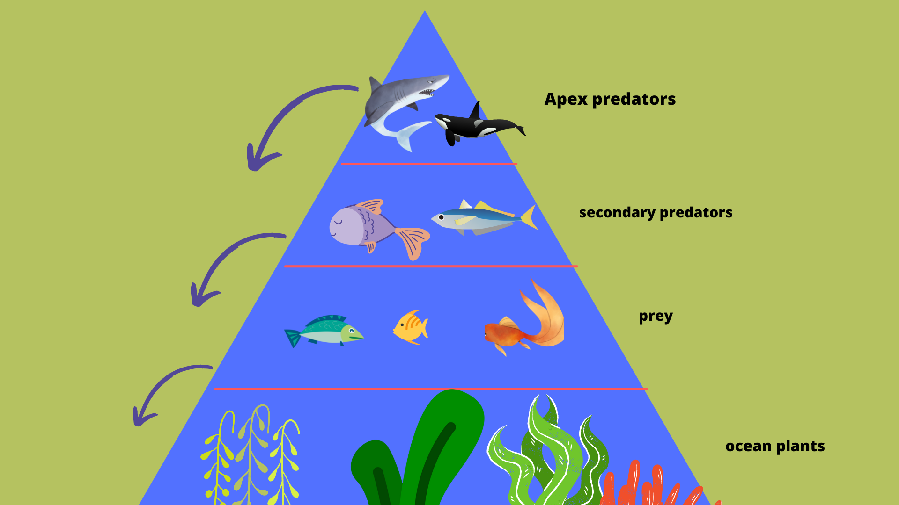

Wildlife
"The greatest danger to our planet is the belief that someone else will save it." - Robert Swan
All sealife is at risk because of human activity like oil spills, plastic pollution, and global warming, but by far the biggest reason, is fishing. Now for the question all of you have been asking - How is fishing ruining the oceans? 2 in every 3 species of big fish are endangered. Soon, all of them will be.
Overfishing is the biggest reason why fish are disappearing. And it's not just the fish. You see, commercial fishing nets catch many other animals when looking for fish. Sharks, Dolphins, Seagulls, Sea-Turtles, are all being caught in these nets along with the target species of fish. This is known as "Bycatch". Fishermen throw the unwanted species back into the water, dead.
Another reason why commercial fishing tremendously impacts the environment negatively is because a good deal of fishermen think that the apex predators compete with their catch. They kill the apex predators like sharks and orcas to get a bigger amount of fish. By taking out the apex predators, the entire food chain would be out of whack. The fish (secondary predators) overpopulate and as a result, the prey goes extinct. Now the secondary predators have nothing to eat and go extinct.
The worst commercial fishing method is bottom trawling. Bottom trawling is a method of fishing that involves dragging heavy weighted nets across the sea floor, in an effort to catch fish. It's a favoured method by commercial fishing companies because it can catch large quantities of product in one go. This method is extremely dangerous as it damages the sea-floor, coral reefs, important ocean plants, and other life. The worst part is that almost 1/3rd of the fish caught goes to waste and are thrown back into the ocean dead.
Why should I care if the sea-life is endangered? Mankind cannot live with a dead sea. Oceans produce the majority of the world's oxygen (the ocean plants - phytoplankton, algae, and more). If we take the oxygen-producing plants away (by bottom trawling, and other fishing methods), we would be suffocating ourselves to extinction.
“It is simple. If the oceans die, we die. There is no surviving on this planet with a dead ocean. We are killing the crew that is keeping the very life support systems on this planet functioning.”
How to save the Ocean:
1. Stop eating fish or atleast cut down on it.
Stop eating commercial fish to discourage fishing businesses. (Fishes also have high levels of mercury which is very unhealthy for you. The omega 3 fatty acids are not found in fish, but the algae that fish eat.)
2. Reduce plastic waste and recycle.
Switch to reusable bags, waterbottles, and so on. Recycle items instead of throwing them away.
3. Donate to charities listed below.
Donate to some of the charities listed below dedicated to restoring fish and other wildlife in the sea.
Water Pollution
Most plastic ends up in the ocean because of wind and rainwater that carries plastic waste into drains that lead to the streams, rivers and oceans. These plastic bits break up into very small plastic particles which are called “microplastics”. Microplastics damage aquatic creatures, as well as turtles and birds: They block digestive tracts, diminish the urge to eat, and alter feeding behavior, all of which reduce growth and reproductive output. Sea creatures who accidentally ingest the plastic are stuffed with it, and can quickly starve and die. Now, if we eat sea-creatures like fish, we are also harming ourselves in the long run. So if we are polluting the ocean's wildlife, and then eating it, we are directly polluting our own bodies.
According to seaspiracy, the majority of waste in the Great Pacific Garbage Patch, are actually fishing nets. Many animals get caught in these nets and die. So if we just stop fishing, we can solve severe issues that could take a huge toll on the earth.

Charities
Please donate to some of the charities below dedicated to saving the wildlife in the sea and stopping overfishing. Make a difference today!
OPS
"Unsustainable fishing methods threaten the stability of marine ecosystems." Learn what OPS does here: OPS and donate to OPS here: Donate to OPS!
Seaspiracy
"Supporting us with a monthly or one-off donation is an incredible way to help us continue fighting for our oceans. We are already moving ahead with further investigative and educational content to share across social media, and are getting ready to launch a worldwide campaign to pressure world leaders to save our oceans and bring it to the forefront of environmental and political action." Learn what Seaspiracy does here: Seaspiracy and donate to Seaspiracy here: Donate to Seaspiracy!
BLUE (Blue Marine Foundation)
"Blue Marine Foundation (BLUE) is a charity dedicated to restoring the ocean to health by addressing overfishing, one of the world’s biggest environmental problems." Learn what BLUE does here: BLUE and donate/support BLUE here: Donate to BLUE!
FishAct
"FishAct is a conservation movement of volunteers from all over Europe, fighting for a future with healthy oceans full of life. Our voluntary fisheries observers go on undercover missions to document and expose illegal and destructive fishing practices." Learn what FishAct does here: FishAct and donate/support FishAct here: Donate to FishAct!
Sea Shepherd
"Sea Shepherd Legal’s mission is to save marine wildlife and habitats by enforcing, strengthening, and developing protective laws, treaties, policies, and practices worldwide. We work collaboratively with governments, encourage public engagement, and litigate against irresponsible actions. " Learn what Sea Shepherd does here: Sea Shepherd and donate/support Sea Shepherd here: Donate to Sea Shepherd!
Merchandise
All Profit will be donated to the charites listed above.
I Want This!
$20
SaveTheSeas Jigsaw Puzzle. All proceeds from the sale will go to the charities listed above. Click text above to buy or click here: Buy now!